The ruins of the Great Fountain (Dashuifa) in the European-style section of the Yuanmingyuan, the Summer Palace burned in 1860. Photo by 颐园新居, 2012. CC BY-SA 3.0, Wikimedia Commons.
Q7 story · The Yuanmingyuan, outside Beijing · October 1860
In October 1860 British Troops Set Fire to the Emperor's Summer Palace
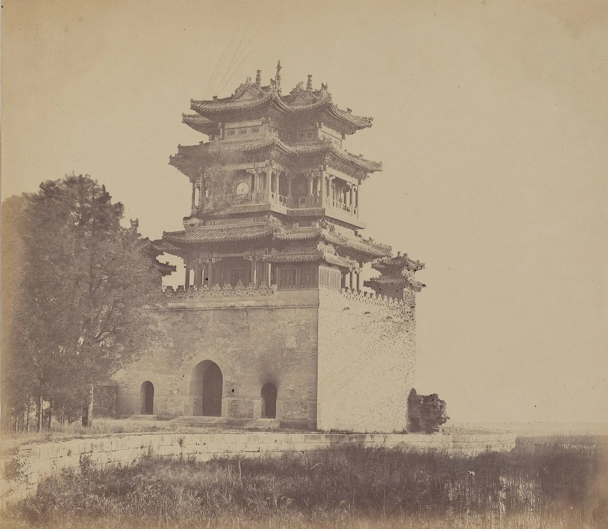
A pavilion in the Summer Palace grounds, photographed by Felice Beato in the days before the fire of October 1860. National Gallery of Art, Washington. CC0, Wikimedia Commons.
Northwest of Beijing lay the Yuanmingyuan, the Qing emperors' great park of palaces and gardens.
In October 1860 British and French soldiers looted it of porcelain, robes, and furniture.
Then British troops set the whole complex on fire, and it burned for two days.
How had a trade war come to this?
Sources: Ebrey, Ch. 18, p. 322; the photographer and the length of the fire (Beato; Hevia, 2003). Image: Felice Beato, 1860.
Recap · The first Opium War
Recap: In 1842 the Treaty of Nanjing Opened Five Ports and Gave Foreigners Special Rights
Britain won the first Opium War with steamships and modern guns · Ch. 18 L1 · nemesis ↗
The Treaty of Nanjing opened five ports, ceded Hong Kong, and fixed China's tariffs · Ch. 18 L1 · treaty-terms ↗
Sources: Ebrey, Ch. 18, pp. 317–318; Ch. 18 L1 for the first war.
Q7 story · The Amur River and the Pacific coast · 1858–1860
Russia, Seeing China's Weakness, Took the Lands North of the Amur and Down to Vladivostok
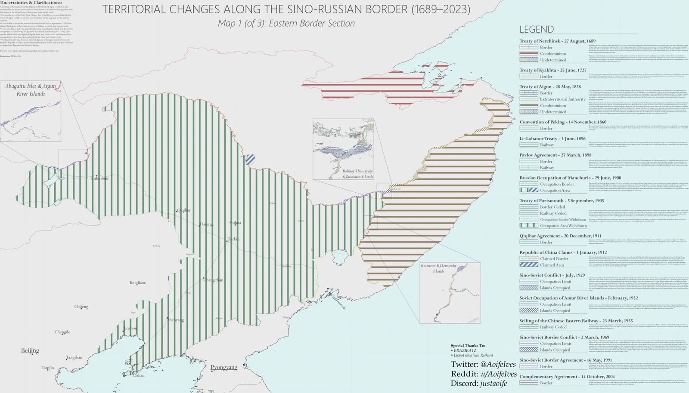
Modern map of the Chinese–Russian border in the east. The striped areas north of the Amur and east of the Ussuri passed from the Qing to Russia in the treaties of 1858 and 1860. Map by AoifeIves, CC BY-SA 4.0, Wikimedia Commons.
In 1689 the Qing and Russia had fixed their border far north of the Amur River · Ch. 16 L2 · steppe-closed ↗
In the 1850s, seeing China's weakness, Russia pushed into the Amur River valley.
Treaties of 1858–1860 gave Russia the lands north of the Amur and the coast down to Vladivostok.
Russia won all this without a war, while Britain and France did the fighting.
Sources: Ebrey, Ch. 18, p. 321; Ch. 16 L2 for the 1689 border. Map: AoifeIves.
Q7 story · Guangzhou · 1856
Britain and France Wanted the Treaties Rewritten, and a Small Ship Called the Arrow Gave Britain a Pretext
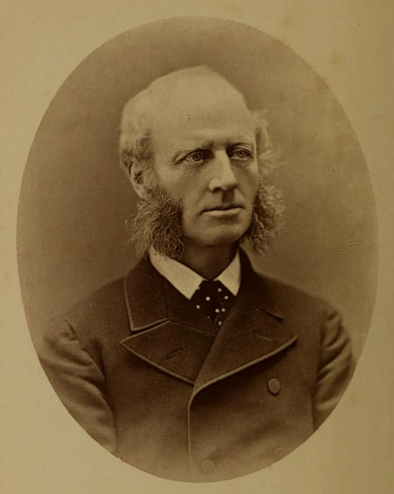
Harry Parkes, the British consul at Guangzhou who turned the Arrow incident into a cause for war, photographed in Tokyo in 1883. Public domain, Wikimedia Commons.
Britain and France both wanted the trade terms of the Opium War renegotiated.
They said China had failed to carry out all the terms agreed a decade earlier.
In October 1856 Qing officers boarded the Arrow, a Chinese-crewed ship sailing under a British flag, and arrested its crew.
Britain called it an insult to its flag and attacked; the French joined in.
Names in This Story
Second Opium Waralso called the Arrow War, 1856–1860
Guangzhouthe southern port Westerners called Canton
Harry ParkesBritish consul at Guangzhou
Sources: Ebrey, Ch. 18, p. 321; the boarding, Parkes, and the French missionary (Wong, 1998).
Q7 story · Guangzhou · 1857–1858
At the End of 1857 the Allies Took Guangzhou, and Its Governor-General Was Shipped Off to India
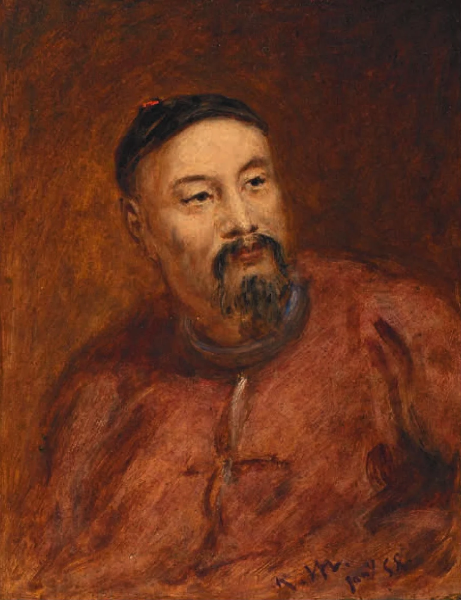
Ye Mingchen, governor-general at Guangzhou, painted as a prisoner in January 1858 by the British artist Robert Morrison. Public domain, Wikimedia Commons.
The war was delayed in 1857 when British troops were sent to put down a revolt in India.
At the end of 1857 British and French forces easily captured Guangzhou.
They held the city for three years.
They captured its governor-general, Ye Mingchen, and shipped him to Calcutta, where he died.
Sources: Ebrey, Ch. 18, p. 321; the delay, Ye's capture and death (Wong, 1998). Image: Robert Morrison, 1858.
Q7 story · Tianjin · 1858
In 1858 Allied Gunboats Took the Tianjin Forts, and Qing Envoys Signed New Treaties
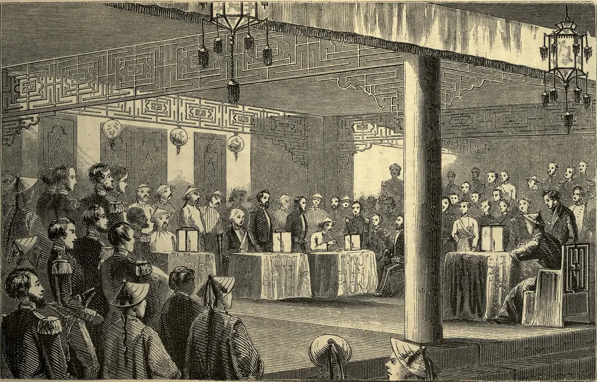
The signing of the Treaty of Tianjin, 1858, an engraving published in Britain in 1860. Public domain, Wikimedia Commons.
British and French ships sailed north and took the forts guarding Tianjin, near Beijing.
Threatened with a march on Beijing, the Qing negotiator agreed to foreign envoys living there.
Ten new ports opened, and Westerners, including missionaries, could travel anywhere in China.
China paid 4 + 2 million ounces of silver, and a new tariff made opium a legal import.
Sources: Ebrey, Ch. 18, pp. 321–322; the opium tariff of 1858 (Wong, 1998). Image: engraving, 1860.
Q7 story · The mouth of the Beihe · June 1859
In 1859 Qing Forts at the River Mouth Drove the British Back
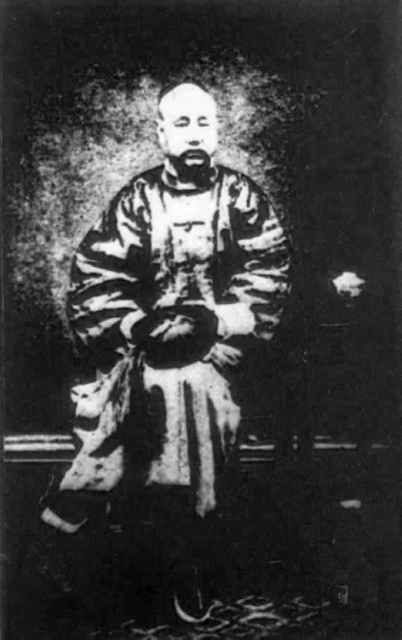
Sengge Rinchen, the Mongol prince who commanded the Qing defenses at the river mouth. Portrait, before 1865. Public domain, Wikimedia Commons.
The emperor opposed foreign ambassadors in Beijing, calling them little better than spies.
In 1859 the British came back to sign, and insisted on sailing up the Beihe River toward Beijing.
The Qing wanted them to travel overland; when the British forced the river, Qing guns drove them off.
Several British gunboats were sunk or crippled, a rare Qing victory.
Sources: Ebrey, Ch. 18, p. 322; Sengge Rinchen and the losses (Wong, 1998). Image: public domain.
Q7 story · From the coast to Beijing · August–October 1860
In 1860 an Army of 11,000 British and 6,700 French Troops Fought Its Way to Beijing, and the Emperor Fled
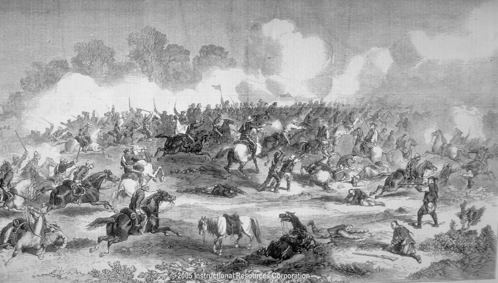
British dragoons charge Qing cavalry near Beijing on 21 September 1860. Illustrated London News, 22 December 1860, "from a sketch by our special artist in China." Public domain, Wikimedia Commons.
A new expedition of 11,000 British and 6,700 French soldiers landed in August 1860.
It took the river forts from behind and beat the Qing cavalry on the road to Beijing.
The Xianfeng emperor fled north to his hunting palace beyond the Great Wall.
When Qing officials did not give way on every point, the allies charged into Beijing.
Sources: Ebrey, Ch. 18, p. 322; the landing, the battles, and the emperor's flight to Rehe (Hevia, 2003). Image: Illustrated London News, 1860.
Q7 story · The Yuanmingyuan · 6–19 October 1860
The Invaders Looted the Summer Palace, Then Burned It to Punish the Emperor
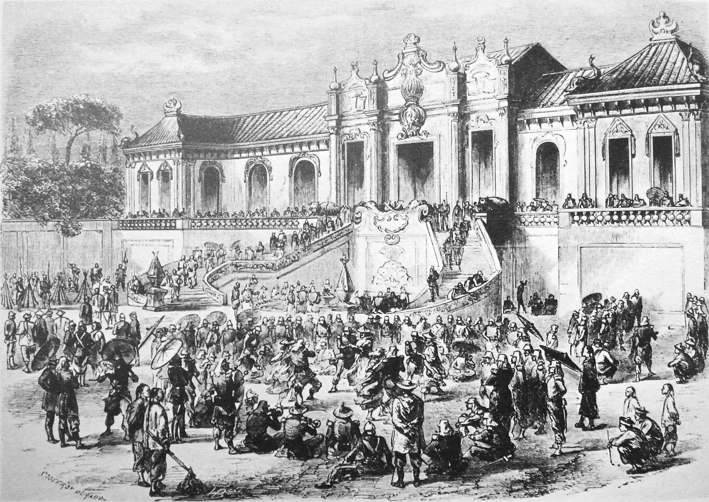
Looting at the Summer Palace in 1860, an engraving after a drawing by the French artist Godefroy Durand. Public domain, Wikimedia Commons.
The Russian envoy talked the British out of burning the palace inside Beijing.
French and British soldiers looted the Summer Palace first, carrying off treasures by the cartload.
The British envoy, Lord Elgin, ordered it burned in revenge for prisoners who had died in Qing hands.
Many of the palace's treasures are still in Western museums and private collections.
Sources: Ebrey, Ch. 18, p. 322; the prisoners, Elgin's order, and the fate of the loot (Hevia, 2003). Image: Godefroy Durand, 1860.
Q7 story · Beijing · October–November 1860
Prince Gong Accepted the Terms: Sixteen Million Ounces of Silver and Kowloon for Britain
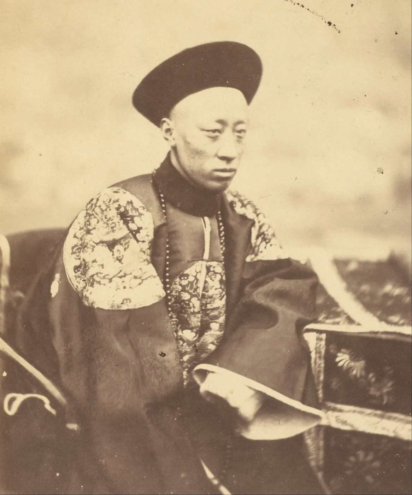
Prince Gong, the emperor's younger brother, photographed by Felice Beato in Beijing on 2 November 1860, days after he signed the peace. Public domain, Wikimedia Commons.
The Russian envoy then persuaded the Qing court to accept the allies' terms.
China confirmed the treaties of 1858, envoys in Beijing included.
The indemnity rose to 16 million ounces of silver, and Britain gained the Kowloon peninsula opposite Hong Kong.
Russia, the go-between, took its own reward: the coast down to Vladivostok.
Sources: Ebrey, Ch. 18, pp. 321–322; Prince Gong's role and the dates of the conventions (Hevia, 2003). Image: Felice Beato, 1860.
Q7 story · After 1860
After 1860 the Western Powers Decided That a Weak Qing Dynasty Was Worth Keeping
The unequal treaties gave the Western powers many advantages inside China.
A collapsing dynasty could not pay indemnities or enforce treaties.
So after 1860 the powers increasingly propped up the Qing against the Taiping · Ch. 18 L2 · eva ↗
Foreign-run customs, begun at Shanghai in 1854, spread to every treaty port · ps-customs ↩
Sources: Ebrey, Ch. 18, pp. 322, 325; Ch. 18 L2 for the Ever Victorious Army.
Q7 concept · Sovereignty
Concept: The War Took Away More of China's Sovereignty
Concept
Sovereignty
A state's right to rule its own territory and people without taking orders from outside: to make its own laws, set its own taxes, guard its own borders, and decide whom to receive.
Foreign ambassadors now lived in Beijing whether the emperor liked it or not.
Foreigners and missionaries traveled the interior under their own consuls' law.
China could not raise its own tariffs or transit taxes without foreign consent.
Land passed to Britain and Russia by treaty.
Sources: Ebrey, Ch. 18, pp. 317, 321–322.
Reading Guide · Review Question 7
Reading Guide · Review Question 7
Review Question 7
What were the causes and outcomes of the Second Opium War, and how did it further weaken Qing sovereignty?
In 1861 the Emperor Died, and the Child Emperor's Mother and Uncle Seized Control
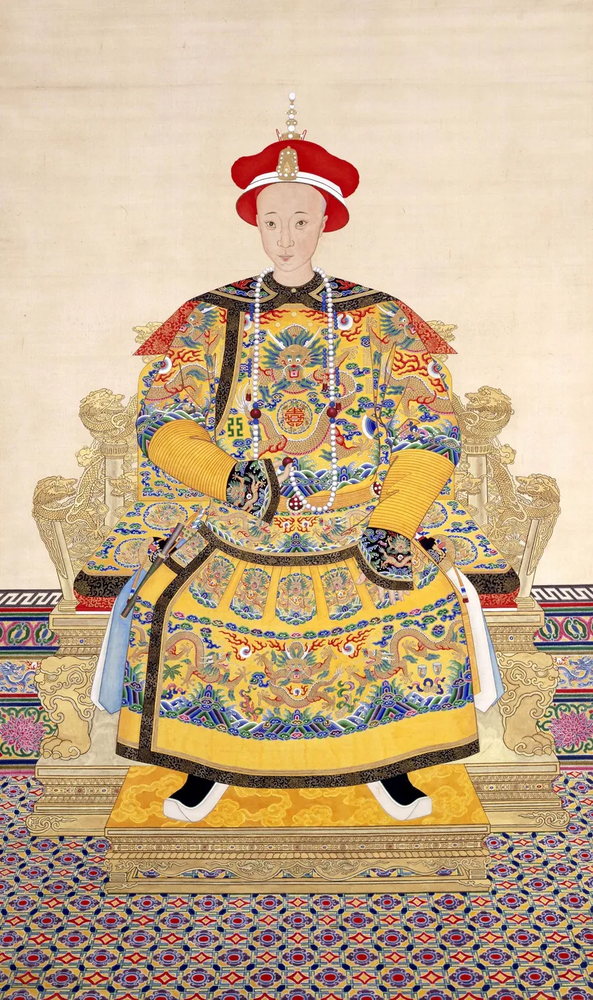
The Tongzhi emperor (reigned 1861–1875), who came to the throne at the age of five. Court portrait by an unknown Qing painter. Public domain, Wikimedia Commons.
The Xianfeng emperor died in 1861, still in exile beyond the Great Wall.
His five-year-old son became emperor.
After a palace coup, his mother Cixi and the senior empress dowager, Ci'an, ruled as regents, with his uncle Prince Gong as chief minister.
A new reign brought new officials, and a chance for new policies.
Names in This Story
Xianfengthe emperor who fled in 1860 and died in 1861
Tongzhihis young son, emperor 1861–1875
Prince Gongthe boy's uncle, who signed the 1860 peace
Cixi, Ci'anthe boy's mother and the late emperor's empress, both empresses dowager
Sources: Ebrey, Ch. 18, p. 322; the emperor's death at Rehe and Tongzhi's age (Wright, 1957); the coup of 1861 and Ci'an (Rawski, 1998). Image: Qing court portrait.
Q8 story · Shanghai · about 1860
In Shanghai the Scholar Feng Guifen Watched Westerners Defend the City Against the Taiping
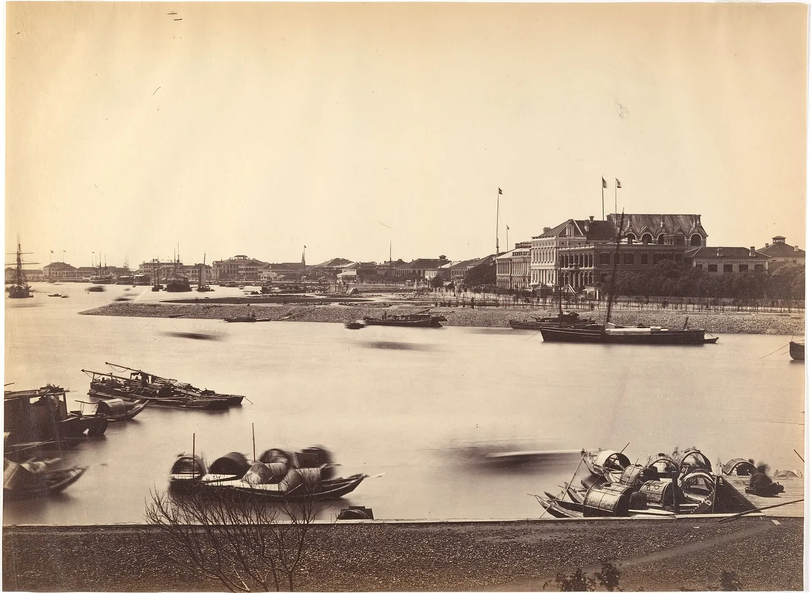
The Bund, Shanghai's waterfront, photographed by John Thomson in 1869. Metropolitan Museum of Art. CC0, Wikimedia Commons.
Feng Guifen (1809–1874) was a scholar from Suzhou who had passed the highest examination.
He fled to Shanghai when the Taiping took his home region.
There he watched British and French troops, with modern guns, defend the city.
In 1861 he wrote essays that made the case for wide-ranging reform.
Sources: Ebrey, Ch. 18, p. 322; Feng's degree, his home in Suzhou, and the title of his essays (de Bary and Lufrano, 2000). Image: John Thomson, 1869.
Q8 source · Feng Guifen's essays · 1861
"Why Are Western Nations Small and Yet Strong? Why Are We Large and Yet Weak?"
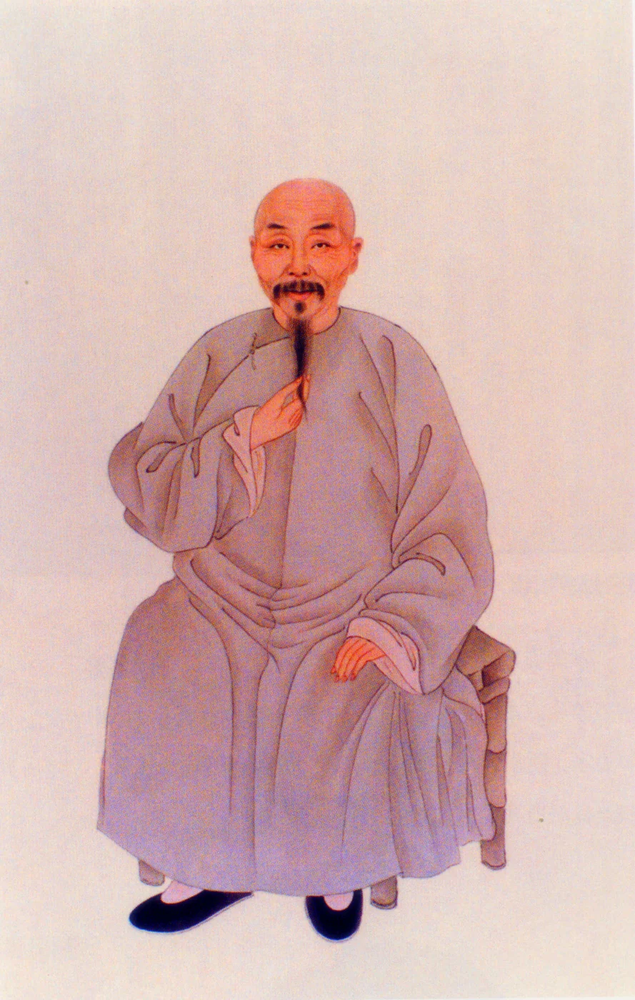
Feng Guifen, a later portrait painted by Yang Pengqiu for a twentieth-century collection of portraits of Qing scholars. Public domain, Wikimedia Commons.
Feng noted that China was a hundred times bigger than France and two hundred times bigger than Britain.
Yet small Western nations had beaten it twice.
"China has many brilliant people. There must be some who can learn from the barbarians and surpass them."
Feng Guifen, 1861
Sources: Ebrey, Ch. 18, p. 322, quoting de Bary and Lufrano, Sources of Chinese Tradition (2000). Image: Yang Pengqiu, 20th century.
Q8 story · Feng Guifen's proposals
Feng Proposed Hiring a Few "Barbarians" to Build Shipyards and Arsenals, and Translating Western Books
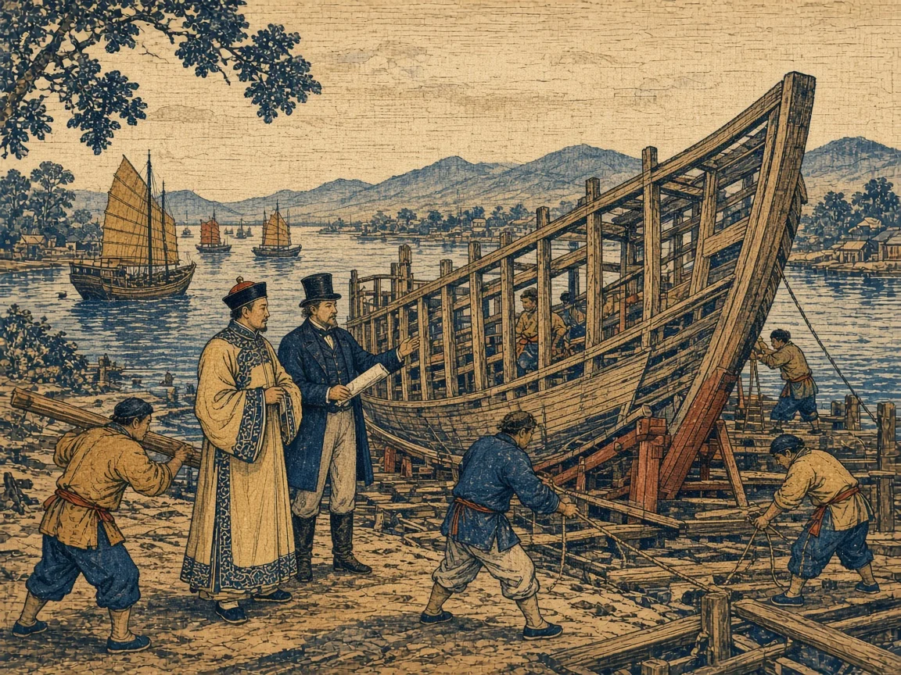
AI-generated illustration in a woodblock-print style, made for this deck: a Qing official and a hired Western engineer inspect a steamship hull taking shape in a riverside shipyard, as Feng proposed. An interpretation, not a historical source.
Hire a few foreigners to set up shipyards and arsenals in each major port.
Reward the Chinese managers with examination degrees if their ships and guns matched the foreigners'.
Set up translation bureaus for Western books on mathematics and the sciences.
Hire Westerners to teach groups of boys Western languages.
Sources: Ebrey, Ch. 18, p. 322. Image: AI-generated illustration made for this deck.
Q8 story · Feng Guifen's proposals
Feng Even Proposed That Officials Elect Their Superiors, and That the Votes Be Counted
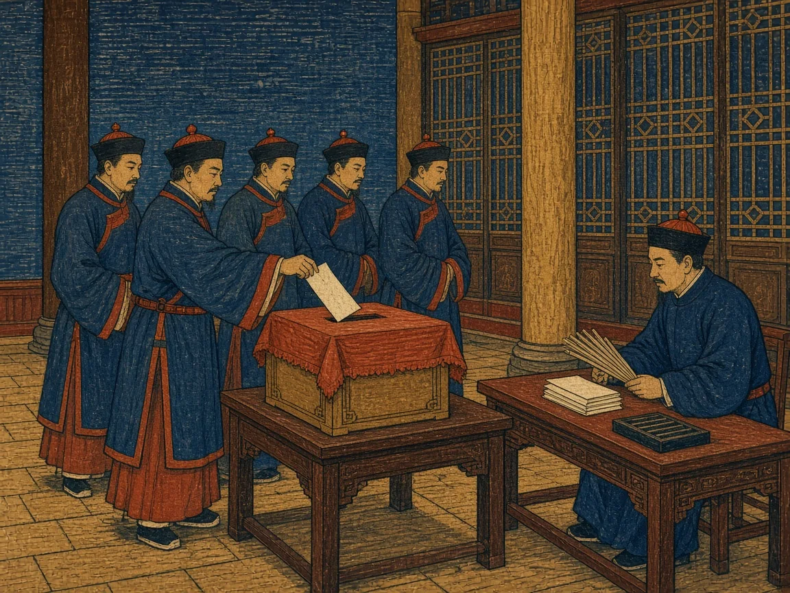
AI-generated illustration in a woodblock-print style, made for this deck: officials cast paper ballots for their superiors while a clerk counts the votes. This is Feng's imagined plan; it was never carried out. An interpretation, not a historical source.
To improve officials' morale, high officials would be elected by lower-ranking ones.
Local elites would nominate local officials.
The votes were to be counted, probably an idea from foreign elections.
This went far beyond guns and ships, and it was never carried out.
Sources: Ebrey, Ch. 18, pp. 322–323. Image: AI-generated illustration made for this deck.
Q8 concept · Self-strengthening
Concept: Self-Strengthening Meant Learning Western Skills to Defend the Chinese Way
Concept
Self-Strengthening
The reform movement of about 1861–1895, led by officials such as Prince Gong, Zeng Guofan, and Li Hongzhang, that built arsenals, shipyards, schools, and industries on Western models in order to make the Qing strong enough to resist the foreign powers.
Goal: make China strong enough to resist the foreigners.
Method: borrow Western weapons, science, and industry.
Limit: keep the emperor, the examinations, and Confucian values.
Leaders: provincial officials, with Prince Gong's support at court.
Sources: Ebrey, Ch. 18, pp. 322–323; the movement's dates and its "strong" goal (Teng and Fairbank, 1979).
Q8 story · Beijing · 1861–1880
A Foreign Office Run by Prince Gong Handled Diplomacy, and by 1880 China Had Embassies in Seven Capitals
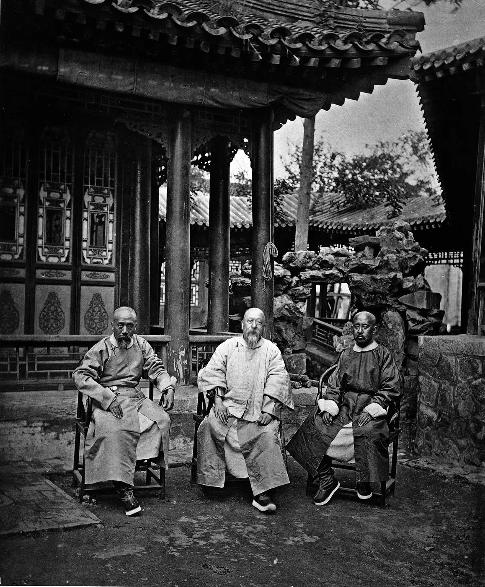
Members of the Qing foreign office (the Zongli Yamen) in Beijing, photographed by John Thomson about 1871. Public domain, Wikimedia Commons.
In 1861 a new foreign office, the Zongli Yamen, took charge of diplomacy, with Prince Gong at its head.
A school in Beijing taught European languages and international law.
Envoys went abroad for the first time.
By 1880 China had embassies in London, Paris, Berlin, Madrid, Washington, Tokyo, and St. Petersburg.
Sources: Ebrey, Ch. 18, p. 323; the office's name, the 1862 language school (the Tongwen Guan), and the photographer (Thomson; Wright, 1957). Image: John Thomson, about 1871.
Q8 story · Shanghai · 1865
In 1865 Zeng and Li Opened the Jiangnan Arsenal at Shanghai, with a Bureau to Translate Western Books
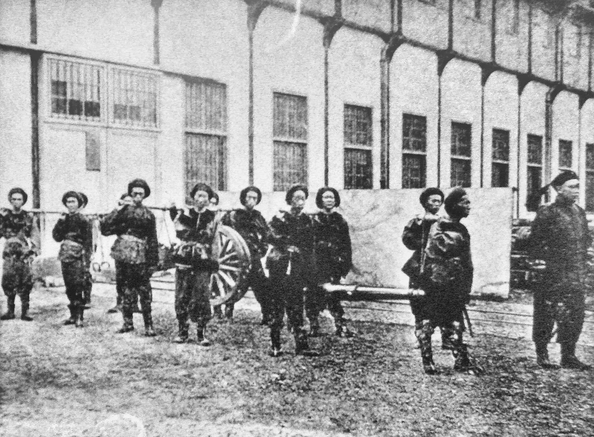
Moving a gun at the Jiangnan Arsenal, Shanghai, before 1900. Public domain, Wikimedia Commons.
In 1865 they founded the Jiangnan Arsenal in Shanghai to make guns and steamships.
Its translation bureau turned Western books on science and engineering into Chinese.
In 1866 Zuo Zongtang opened the Fuzhou Navy Yard, with French engineers and a naval school.
Sources: Ebrey, Ch. 18, pp. 322–323; the first steamship and the translator John Fryer (Elman, 2005); the Fuzhou Navy Yard (Pong, 1994). Image: photograph before 1900.
Q8 story · San Francisco · 1872
In 1872 the First Chinese Boys Sailed to America to Study
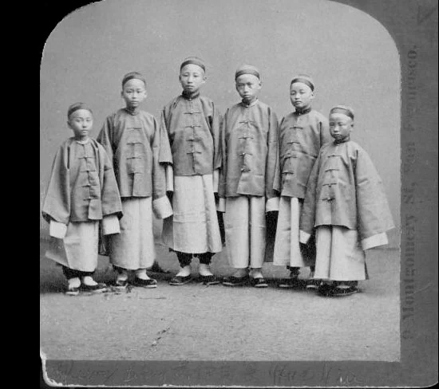
Six boys of the first group of the Chinese Educational Mission on their arrival in California, September 1872. Public domain, Wikimedia Commons.
In 1872 Li and Zeng recommended sending teenagers to study in the United States.
Some 120 boys went, in four groups, led by Yung Wing, who had studied at Yale.
They lived with families in New England and went to American schools.
Officials feared they were becoming too American, and in 1881 the court called them home.
Sources: Ebrey, Ch. 18, p. 323; the Chinese Educational Mission, Yung Wing, and its recall (LaFargue, 1942). Image: photograph, 1872.
Q8 story · Li Hongzhang's projects · 1862–1893
Li Hongzhang Built Gun Factories, Mines, Mills, and a Navy
Li became the leading official after Zeng died in 1872, governor-general of the capital province, Zhili, 1870–1895.
1862
Gun factories at Shanghai, with British and German instructors
1865
Jiangnan Arsenal at Shanghai, with a translation bureau
1872
China Merchants' Steam Navigation Company; students to the U.S.
1877
Kaiping coal mines
1878
Shanghai Cotton Mill
1888
The Beiyang fleet
Sources: Ebrey, Ch. 18, p. 323 (table, Li Hongzhang's Self-Strengthening Projects, 1862–1893); Li's years in Zhili (Chu and Liu, 1994).
Q8 story · Beyond guns and ships · 1870s–1890s
Li and Other Reformers Came to See That Guns and Ships Rested on Industry
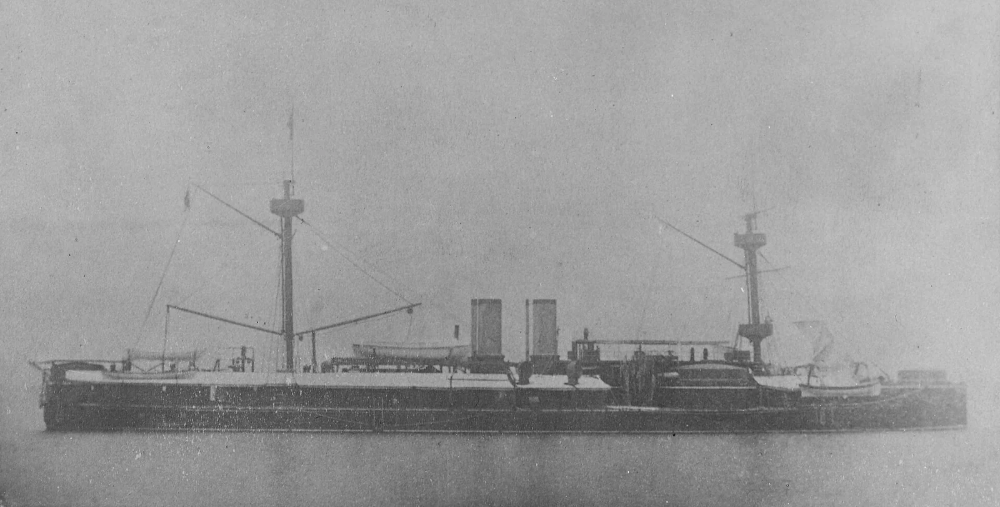
The battleship Dingyuan, built in Germany for the Qing and flagship of Li Hongzhang's Beiyang fleet. U.S. Naval History and Heritage Command NH 1926. Public domain, Wikimedia Commons.
Guns and ships, the reformers found, were only the surface of Western strength.
To catch up, China would need new industries: railways, steamships, mines, telegraphs, and cotton mills.
Newspapers in Shanghai and Hong Kong began to report on the world.
By 1888 China had a modern navy, the Beiyang fleet, with German-built battleships.
Sources: Ebrey, Ch. 18, p. 323; the ship's German builder and dates (U.S. Naval History and Heritage Command). Image: U.S. Naval History and Heritage Command.
Reading Guide · Review Question 8
Reading Guide · Review Question 8
Review Question 8
What goals did Feng Guifen and the Self-Strengthening reformers hope to achieve, and what specific reforms did they advocate?
Next Time: The Empress Dowager, and Why Reform Fell Short
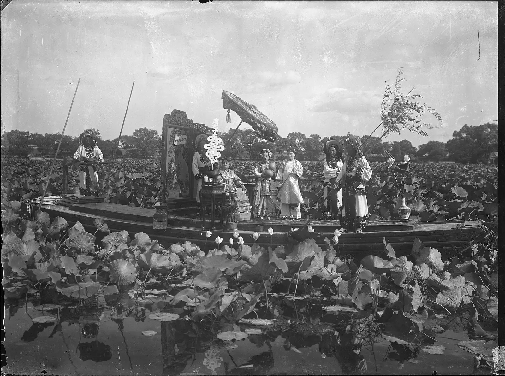
The Empress Dowager Cixi with attendants on the imperial barge in the palace lakes of Beijing, photographed by the court photographer Xunling, 1903–1905. Public domain, Wikimedia Commons.
During the self-strengthening years, the most powerful person at court was the Empress Dowager Cixi.
Conservatives said copying the West only deepened defeat.
Next time: Cixi, the wars with France and Japan, and the Boxers · Ch. 18 L4 · title ↗
Sources: Ebrey, Ch. 18, pp. 323–324. Image: Xunling, 1903–1905.
Pierian Spring · Independent Study
Today's lecture ends here. Continue on your own: the stories below finish this chapter's history.
"A little learning is a dang'rous thing; Drink deep, or taste not the Pierian spring."Alexander Pope, An Essay on Criticism, 1711
Pierian Spring · Story · The Yuanmingyuan · 1740s–1860
The Ruins You Saw at the Start Were European-Style Palaces Designed by Jesuits for the Qianlong Emperor
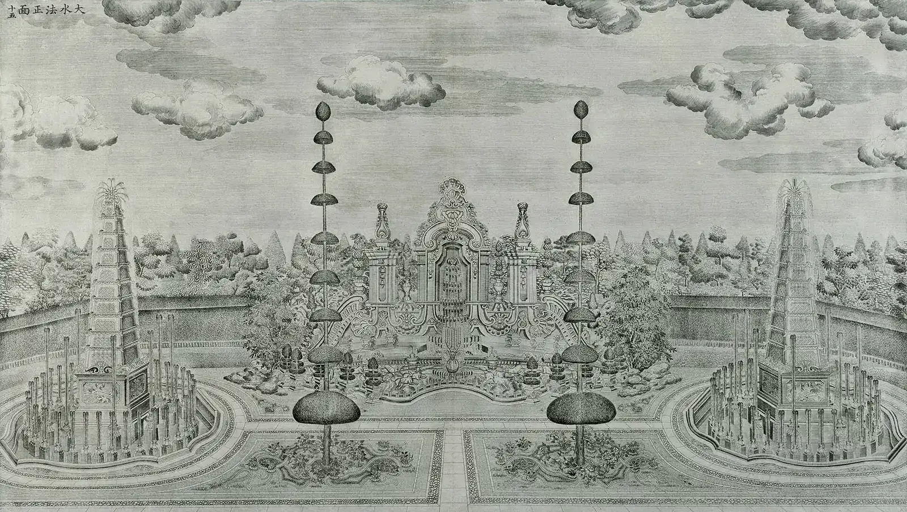
The Great Fountain (Dashuifa) in the European palaces of the Yuanmingyuan, one of a set of copperplate engravings made by Qing court artists, 1786. Public domain, Wikimedia Commons.
The Qianlong emperor had Jesuit missionaries at court design a corner of the park in European style · Ch. 16 L2 · jesuits-court ↗
Stone palaces, mazes, and fountains were built from the 1740s on.
One fountain clock had twelve bronze animal heads that spouted water in turn, each for one of the day's twelve two-hour periods.
In 1860 these buildings burned with the rest, and only their stone frames survived.
Sources: Ebrey, Ch. 18, p. 322; Ch. 16 L2 for Jesuits at the Qing court; the European palaces, the engravings, and the bronze heads (Wong, 2001; Barmé, 1996). Image: Qing court engraving, 1786.
Pierian Spring · Story · The treaty ports · 1860–1900
In the Treaty Ports, Foreign Concessions Had Their Own Police, Courts, and Taxes
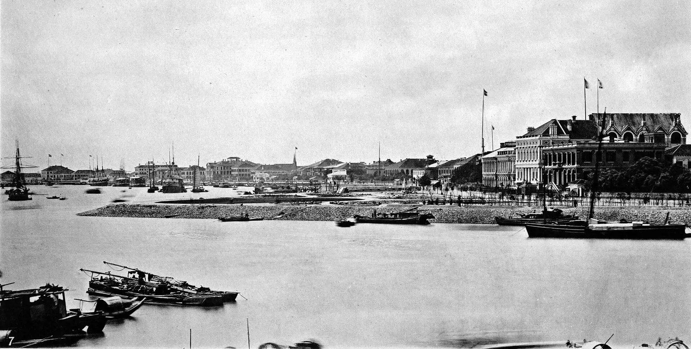
The Bund in front of the British concession at Shanghai, photographed by John Thomson in 1869. Public domain, Wikimedia Commons.
Foreign concessions were districts carved out of Chinese cities.
They had foreign police, foreign law courts, and their own taxes, though most residents were Chinese.
By 1900 about thirty treaty ports were open; Shanghai, Tianjin, Hankou, Guangzhou, and Dalian were the largest.
Foreign warships anchored at the docks, ready to make a show of force.
Sources: Ebrey, Ch. 18, pp. 324–325; the number of treaty ports (Feuerwerker, 1983). Image: John Thomson, 1869.
Pierian Spring · Story · The Imperial Maritime Customs · 1854–1911
Westerners Ran China's Customs Service, and an Irishman, Robert Hart, Led It for Over Forty Years
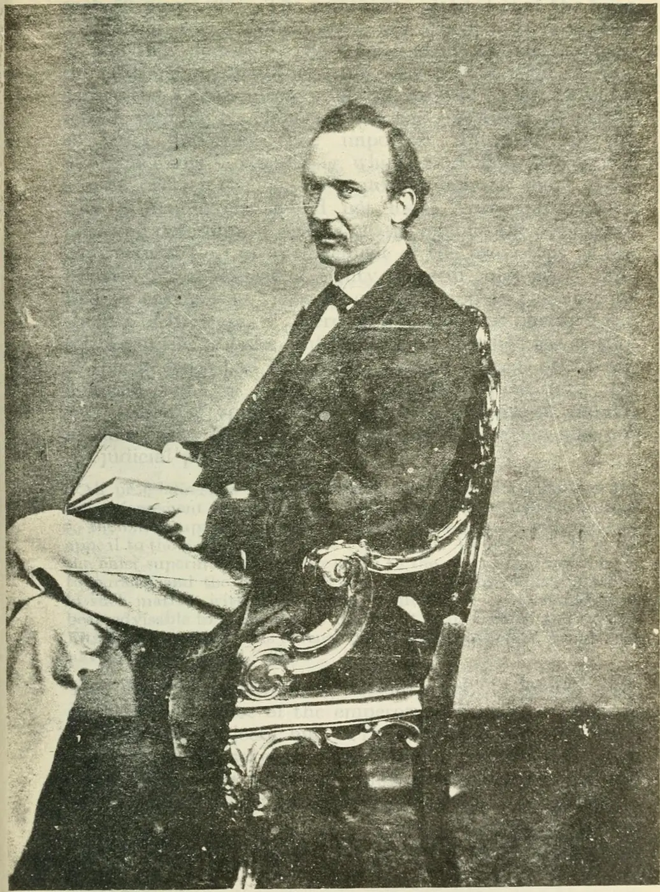
Robert Hart, photographed by J. J. E. Mayall in 1866. Public domain, Wikimedia Commons.
When the Taiping disrupted tariff collection at Shanghai, the British and American consuls collected the duties themselves.
This grew into the Imperial Maritime Customs, staffed at its higher levels by Westerners.
Robert Hart, an Irishman, served as its Inspector General from 1863 to 1911.
It collected the tariffs for the Qing, published trade reports, and built postal and telegraph services.
Sources: Ebrey, Ch. 18, p. 325; Robert Hart and his years in office (Bickers, 2011). Image: J. J. E. Mayall, 1866.
Pierian Spring · Story · Missionaries · 1860–1905
After 1860 Missionaries Spread Through the Countryside, Running Schools, Hospitals, and Orphanages
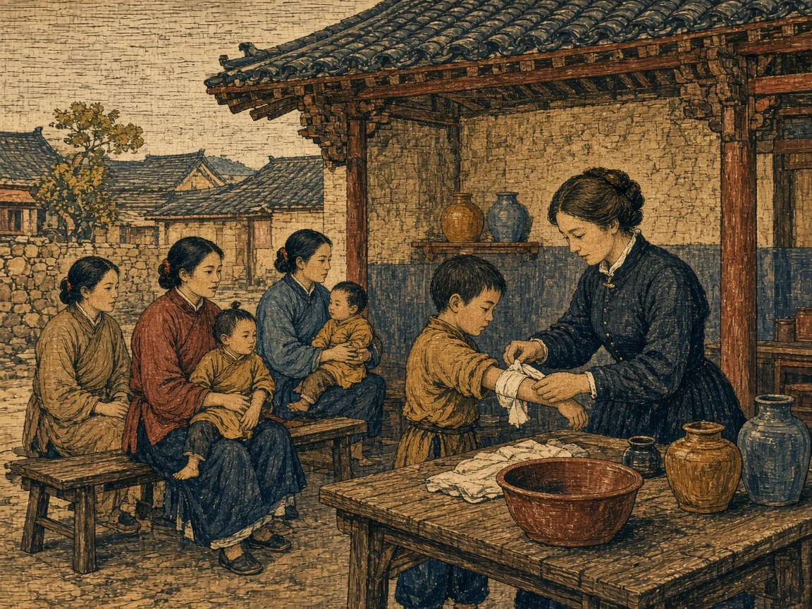
AI-generated illustration in a woodblock-print style, made for this deck: a Western woman missionary bandages a village boy's arm at a mission dispensary in the 1880s, as mothers and children wait their turn. An interpretation, not a historical source.
The treaty of 1860 let missionaries travel and live anywhere in China, and they came in large numbers.
Unlike merchants, they lived among ordinary, often poor, Chinese.
Orphanages helped produce converts, but rumors said missionaries bought babies for evil purposes.
Over time many turned to medicine and education, which the Chinese received better than preaching.
3,900
missionaries in China by 1900 (886 Catholic, about 3,000 Protestant), more than half of them women
250
mission hospitals and dispensaries by 1905, treating about 2 million patients
Sources: Ebrey, Ch. 18, pp. 325–326. Image: AI-generated illustration made for this deck.
Pierian Spring · Story · Tianjin · June 1870
In June 1870 Rumors About an Orphanage in Tianjin Ended in a Riot That Killed the French Consul, Nuns, and Priests
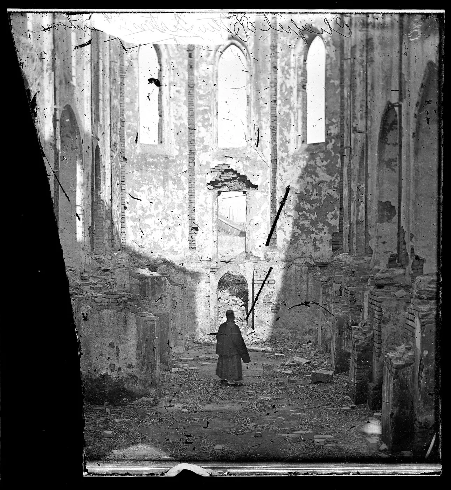
The ruins of the French church at Tianjin after the riot of 1870, photographed by John Thomson. Wellcome Collection L0056435. CC BY 4.0, Wikimedia Commons.
The French had built a cathedral on the site of a Chinese temple, and nuns there ran an orphanage.
When an epidemic killed many orphans, rumors spread that the children were being murdered.
The French consul fired a pistol at Chinese officials, and an angry crowd killed him and about twenty other foreigners, with several dozen Chinese converts.
China paid reparations, punished rioters, and sent a mission of apology to France.
Sources: Ebrey, Ch. 18, pp. 325–326; Zeng Guofan's role in the settlement (Cohen, 1963). Image: John Thomson, 1870s.
Sources and image credits
The Stories in This Deck Rest on These Sources
Main source
Patricia Buckley Ebrey, A History of China, Chapter 18, "China in Decline (1800–1900)," pp. 317–318, 321–326. All page references in this deck are to these pages.
Feng Guifen, essays of 1861, in Wm. Theodore de Bary and Richard Lufrano, Sources of Chinese Tradition: From 1600 Through the Twentieth Century (2000), pp. 236–237, as quoted in Ebrey, p. 322 (slides p–r).
Further reading beyond Ebrey
J. Y. Wong, Deadly Dreams: Opium, Imperialism, and the Arrow War (1856–1860) in China (1998) (slides e–h).
James L. Hevia, English Lessons: The Pedagogy of Imperialism in Nineteenth-Century China (2003) (slides b, i, j, k).
Mary C. Wright, The Last Stand of Chinese Conservatism: The T'ung-chih Restoration, 1862–1874 (1957) (slides o, u); Evelyn S. Rawski, The Last Emperors (1998) (slide o).
Ssu-yü Teng and John K. Fairbank, China's Response to the West (1979) (slide t).
Benjamin A. Elman, On Their Own Terms: Science in China, 1550–1900 (2005); David Pong, Shen Pao-chen and China's Modernization (1994) (slide v).
Thomas E. LaFargue, China's First Hundred (1942) (slide w).
Samuel C. Chu and Kwang-Ching Liu, eds., Li Hung-chang and China's Early Modernization (1994) (slide x).
Young-tsu Wong, A Paradise Lost: The Imperial Garden Yuanming Yuan (2001); Geremie R. Barmé, "The Garden of Perfect Brightness," East Asian History 11 (1996) (slide cc).
Albert Feuerwerker, "The Foreign Presence in China," The Cambridge History of China, vol. 12 (1983) (slide dd); Robert Bickers, The Scramble for China (2011) (slide ee).
Paul A. Cohen, China and Christianity (1963) (slide gg).
Images (real; via Wikimedia Commons unless noted)
a: Ruins of the Great Fountain, Yuanmingyuan. Photo by 颐园新居, 2012, CC BY-SA 3.0.
b, k: Felice Beato, the Summer Palace before the burning (National Gallery of Art, CC0) and Prince Gong, 1860. Public domain.
d: Map of the Sino-Russian border by AoifeIves. CC BY-SA 4.0.
e, f, h: Harry Parkes, photograph, 1883; Robert Morrison, Ye Mingchen, 1858; Sengge Rinchen, portrait. Public domain.
g, i, j: The signing of the Treaty of Tianjin (1860); Illustrated London News, 22 December 1860; Godefroy Durand, the looting of the Summer Palace, 1860. Public domain.
o, q: Qing court portrait of the Tongzhi emperor; Yang Pengqiu, Feng Guifen. Public domain.
p, u, dd, gg: John Thomson, photographs of 1869–1871: the Bund (Metropolitan Museum of Art, CC0), members of the Zongli Yamen, the British concession, and the church at Tianjin (Wellcome Collection, CC BY 4.0).
v, w: Moving a gun at the Jiangnan Arsenal, before 1900; six students of the Chinese Educational Mission, 1872. Public domain.
y: The battleship Dingyuan, U.S. Naval History and Heritage Command NH 1926. Public domain.
aa: Xunling, the Empress Dowager Cixi on the imperial barge, 1903–1905. Public domain.
cc: Qing court copperplate engraving of the Great Fountain, 1786. Public domain.
ee: J. J. E. Mayall, Robert Hart, 1866. Public domain.
r, s, ff: AI-generated illustrations in a woodblock-print style, made for this deck; s shows Feng Guifen's plan as imagined, never carried out. Interpretations, not historical sources.